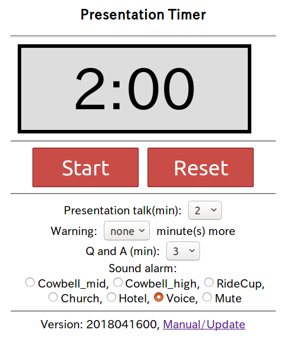

KG's Presentation Timer
Click the image below to start.

How to use(使い方)
If your talk is long, disable screen saver (or lock).
話す時間が長いときは、スクリーンセーバー(ロック)を無効にしてください。
- Set parameters
default: Talk 5min(warning at 4 min) + Q and A 3min, voice alarm
- Set "Presentation talk" in minutes (default 5 min)
発表時間(話す時間)を設定する(default 5分)
- Set "Warning NN minutes more" (default 1 min). Select "none" to
disable Warning.
Warning is disabled if NN is longer or equal to "Presentation talk".
トーク終了の何分前に警告を出すか設定する (default 1分)。
警告を出したくないときは "none"を選ぶ。
発表時間を超える値を選ぶと "none"になる。
- Set "Q and A" time in minutes (default 3 min)
Q and Aを質疑応答時間(分)に設定する(default 3分)
Total session time(セッションの合計時間)
= "Presentation Talk" + "Q and A"
- Choose sound alarm (音声アラームを選ぶ):
- Bell (Cowbell_high, Cowbell_mid, RideCup, church, hotel)
- Voice
- Mute (無音)
- Start/Pause/Reset
- "Start" (開始) -- (Start/Pause/Cont. button)
- Decremental time is shown in blue up to "Presentation time" - 1min
発表時間の1分前まで青で減算表示
- One bell sound or voice alarm (NN more minute) will be heard
and decremental time is shown in orange for one minutes
発表終了1分前にサウンドアラームが鳴り、オレンジで減算表示
- Two bell sounds or voice alarm(end of the talk) will be heard
and incremental time is shown in green
発表終了のサウンドアラーム(ベル2回または音声)が鳴り、緑で加算表示
- Three bell sounds or voice alarm(end of session, thank you) will
be heard and incremental time is shown in red
セッション終了のサウンドアラーム(ベル2回、または音声)が鳴り、
赤表示に変わる
- "Pause"(一時停止) to pause the timer.
"Cont." (続き) to continue.
- "Reset"(リセット) to reset the timer.
"Presentation Talk", "Warning NN minutes2,
and "Q and A" minutes are kept for subsequent use
until the application is reloaded.
再起動するまでは、続けて同じ設定で使えるように、
発表、警告と質疑応答時間の設定は変わらない。
The app should work offline once the program and data have been
cached. Cache expiration period depends on devices.
このアプリケーションはプログラムとデータがキャッシュされたあとは、
オフラインで使用できる。キャッシュが時間切れになる期間は装置に依存する。
goto at kmgoto.jp